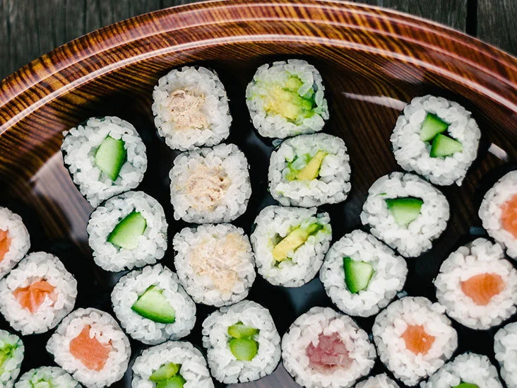

Sushi

Sushi (すし, 寿司, 鮨, 鮓, pronounced [sɯɕiꜜ] or [sɯꜜɕi]) is a Japanese dish of prepared
vinegared rice (鮨飯, sushi-meshi), usually with some sugar and salt, accompanied by a variety
of ingredients (ねた, neta), such as seafood—often raw—and vegetables. Styles of sushi and its
presentation vary widely, but the one key ingredient is "sushi rice", also referred to as shari
(しゃり), or sumeshi (酢飯).[1]
Ingredients
- Sushi rice
- Water
- Rice vinegar
- Sugar
- Salt
- Nori sheets
- Your choice of fillings
- Soy sauce and wasabi for serving
Steps
- Rinse the sushi rice in a strainer until the water runs clear.
- In a pot, combine the rinsed rice and 2 cups of water, and bring to a boil. Reduce the heat to low, cover the pot, and simmer for 18-20 minutes, or until the rice is cooked and tender.
- In a small bowl, combine the rice vinegar, sugar, and salt, and microwave for 30-45 seconds or until the sugar dissolves.
- When the rice is cooked, transfer it to a large bowl, and add the vinegar mixture. Mix gently until the rice is coated evenly.
- Place a sheet of nori on a sushi mat, shiny side down. Spread a thin layer of rice over the nori, leaving about 1 inch of space at the top edge.
- Add your choice of fillings in a line across the center of the rice.
- Use the sushi mat to tightly roll the sushi away from you, pressing down gently to ensure it's tightly packed.
- Use a sharp knife to slice the sushi into rounds, and serve with soy sauce and wasabi.